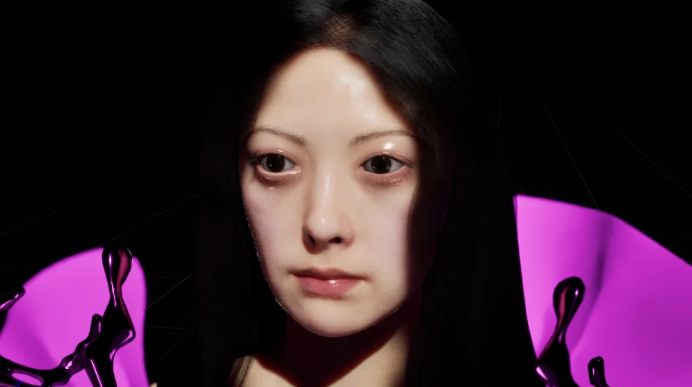
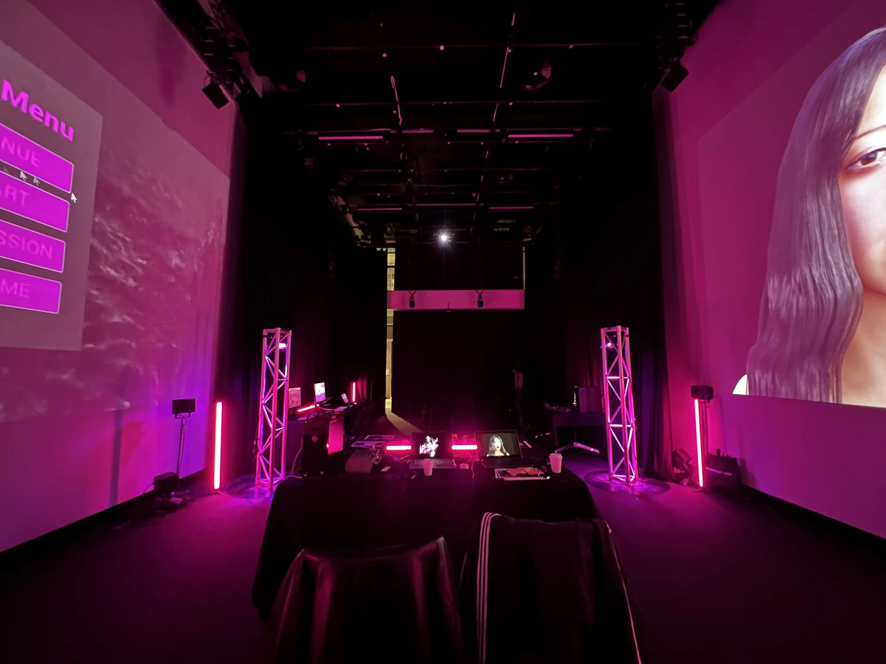
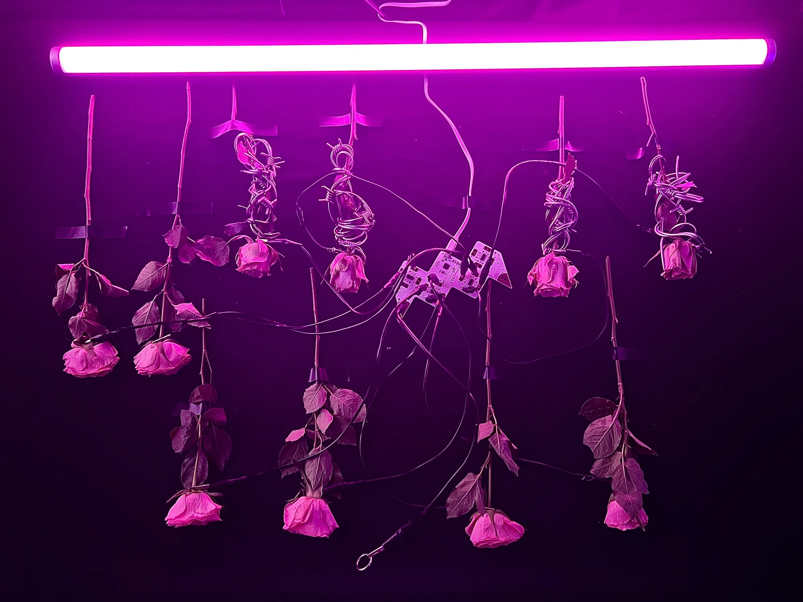
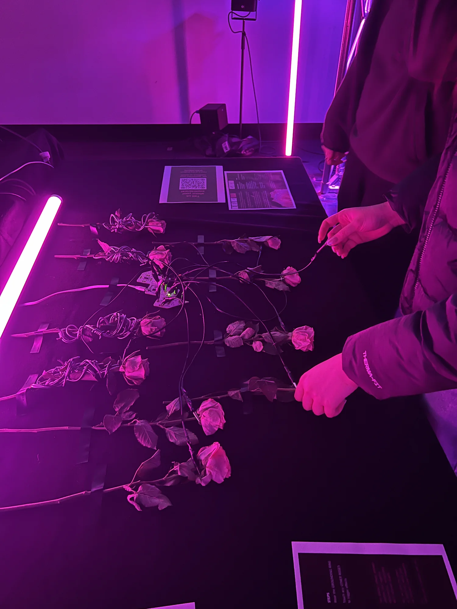
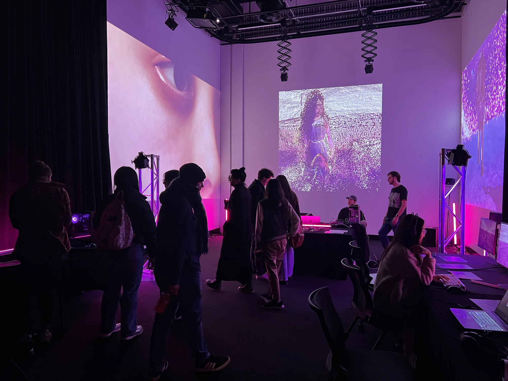
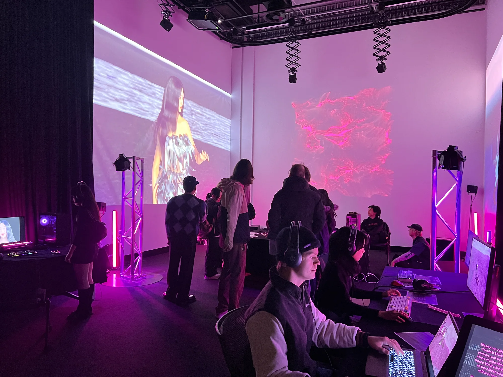

Meta Rose: Origin
Acquisition enquiry
Tell me which work interests you and where you would like to present it.
- minniepark.studio@gmail.com
- Subject
- Artwork acquisition enquiry, Meta Rose: Origin
Or copy the address into your email service.

An interconnected collection of moving image, original sound, a virtual environment and a living-rose installation, establishing the emotional and material vocabulary of Meta Rose.
Overview
First developed as The Meta Rose Project in 2024, Origin brings the rose into a sustained exploration of mixed and ambivalent emotion. The coexistence of petals and thorns provides its starting point: attraction and difficulty, pleasure and pain can remain inseparable within one experience. Pink and grey organise this tension across image and sound. For Park, pink is both a signature colour and a way of working with emotional atmosphere, intensity and energy.
Conceived as an interactive visual album, the project connects 3D-rendered still and moving images, original soundtracks, a music video, a multiplayer Unreal Engine game and a tactile audio-visual installation. The artist’s digital twin, Mintie, appears within this visual world, placing a constructed representation of the artist alongside the rose as a recurring figure.
Participation & composition
In the installation, living roses are arranged in a row across a table, functioning like a tactile keyboard. Touching different flowers activates distinct audio-visual responses within a real-time system made with TouchDesigner. The flower is therefore encountered as both organic material and an interface: its physical presence connects a hand to sound and moving image.
The Meta Rose Game extends the project into a navigable virtual environment. Alongside the rendered works and the installation, it offers a different mode of encountering the same emotional vocabulary. The collection moves between watching, navigating and touching, allowing its recurring forms and contrasting sensibilities to be experienced through different kinds of participation.
Development & presentation
The project took different forms across its 2024 exhibitions. At Seventh Gallery, Melbourne, on 29 May, Park presented the rose installation within a group exhibition. A solo exhibition on 7 June at RMIT University’s Blackbox brought the rose installation and interactive game together within the fuller project. A further solo exhibition followed at RMIT University in November 2024.
Origin established living roses, pink, contrasting audio-visual responses and touch as a connected artistic language. These elements provide the foundation for subsequent Meta Rose chapters, each developing a different question, interaction system and spatial form.
Technical details
Visual album and installation / 2024
- Medium
- Interactive visual album combining a tactile installation, moving image, original soundtracks and a multiplayer game.
- Materials
- Living roses arranged as a tactile keyboard across a table, 3D-rendered imagery, sound and digital character Mintie.
- Dimensions
- Installation dimensions variable according to venue and configuration.
- Tools / software
- TouchDesigner for the rose-responsive installation; Unreal Engine for the multiplayer game.
- Artist / production
- Minnie Park, concept, exhibition planning and production.
Project documentation
The Meta Rose Project, artist’s 2024 project archive ↗Selected documentation
Visual Index →





Acquisition enquiry →
Tell me which work interests you and where you would like to present it.
- minniepark.studio@gmail.com
- Subject
- Artwork acquisition enquiry, Meta Rose: Origin
Or copy the address into your email service.